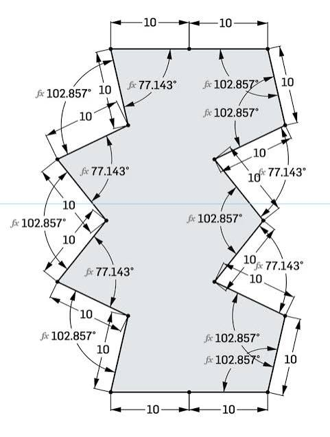

Aperiodic monotile
A single shape that tiles the plane without any repeating translational pattern.
Definition
An aperiodic monotile is a single closed shape in the plane whose congruent copies can tile the entire plane, but only in non-periodic arrangements. Unlike Penrose kite-and-dart sets or other multi-tile aperiodic systems, a monotile uses one shape — though reflected copies may be required depending on whether each side is equal or not.[1][3]
The long-standing einstein problem (German ein Stein, "one stone") asked whether such a shape exists. David Smith, Joseph Samuel Myers, Craig S. Kaplan, and Chaim Goodman-Strauss answered it in March 2023 with the Hat tile,[1] followed two months later by the strictly chiral Spectre tile.[2] Independent proofs and alternative constructions followed within months,[4][5] a measure of how much attention the discovery drew.

Sixty years of near misses
The road to the monotile runs through most of modern tiling theory.[3] Wang tiles (1960s) first linked tiling to logic: Berger proved the tiling problem undecidable by building aperiodic sets of over 20,000 square tiles. Raphael Robinson cut that to six; Penrose reached two with the kite and dart in 1974. For nearly fifty years the count sat at two, with mathematicians unsure whether a single-shape solution existed at all. Recent work continues to map where the boundary of decidability lies — translational tiling becomes undecidable with as few as three tiles,[24] translational monotiles are undecidable in higher dimensions,[56] and the structured-versus-wild dichotomy for translational tilings remains an active frontier.[23]
Adjacent discoveries continue: an aperiodic set of three convex polygons was found in 2024,[15] and SAT solvers are now used to search polyform space for shapes with prescribed tiling behavior.[17]
Ordered without repeating
Aperiodic tilings are not random. They are among the most structured objects in geometry: every tile sits in a deterministic hierarchy produced by substitution rules,[2][10] tile counts across generations follow Fibonacci-like recurrences,[12] and the diffraction structure of Hat tilings is quasicrystalline — sharp peaks, like a crystal, but with symmetries no crystal can have.[6]
For practical work this means patches can be regenerated from a seed, scaled, and exported with stable tile IDs — reproducible geometric datasets, not noise. That combination of global order, local variety, and zero translational repetition is exactly what makes monotile geometry valuable as a design and engineering primitive: it fills space as reliably as a grid while guaranteeing that no two regions ever look the same.
{kind=link}
Weak vs strict chirality
The Hat tile is asymmetric: every tiling mixes unreflected and reflected copies. Some observers argued this makes it a two-shape system; standard tiling literature counts reflected congruent copies as the same tile.[1][3]
The Spectre tile closed the question. Tile(1,1) is weakly chiral — banning reflections by rule leaves only non-periodic tilings — and its curved-edge Spectre variants are strictly chiral: the geometry itself makes reflected copies unusable, so only single-handed non-periodic tilings exist.[2] That distinction matters physically. A glazed ceramic tile, a stamped metal panel, or an injection-molded part cannot be flipped; a shape that tiles without reflections is cheaper to manufacture and impossible to install wrong-side-up.
Miki Imura monotile
Not every monotile that makes non-periodic patterns is an aperiodic monotile. In 2025, Miki Imura published a family of equilateral “Modulo Krinkle” tiles that tile the plane with a single shape and can form striking non-periodic arrangements — often spiral or ring-like — using only elementary modular-arithmetic constructions.[71]
The catch, which Imura states explicitly: the same prototile also admits an ordinary periodic tiling. So it is a monohedral tile with rich non-periodic modes, not an einstein. It belongs on this page because the popular conversation lumps “one shape that tiles without repeating” together; the mathematical distinction is whether every tiling must be non-periodic, or only some of them.

See also
Spectre tile, Hat tile, Substitution tiling
Categories: Concepts · Mathematics